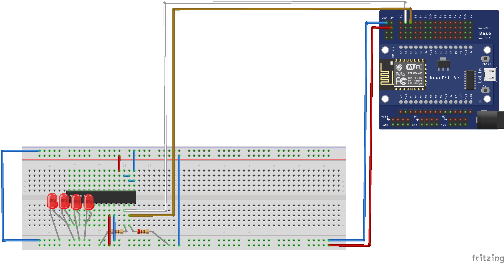

MQTT Broker
Weird problems that were encountered
Some USB cables didn't work at all to write the program in the nodeMCU. It was a lost of time to understand why did that happen, and, in the end, we had to buy some cables to go around it.
An Arduino forum commented that most USB cables are no thought for data transfering but just for charging a mobile battery. In those cases, the cable has only two wires inside, but in the data transfering cables, it usually has 4. For mobiles and similar devices, it only affects that the data trasference is slower, but NodeMCU is not able to use 2 wires only, and needs to have the 4 of them.
Components
- NodeMCU module
- I2C bus
- MCP23017
- Segment LED bar
Flux

Code
/**
* MQTT NodeMCU
*/
#include "Wire.h"
#include <ESP8266WiFi.h>
#include "uMQTTBroker.h"
#define WIRE_SPEED 3400000
#define MCPADDRESS 0x20 // Conf LOW-LOW-LOW
// Main registers
#define IODIRA 0x00
#define IODIRB 0x01
#define IOCON 0x05
#define GPIOA 0x12
#define GPIOB 0x13
#define GPPUA 0x0C
#define GPPUB 0x0D
// Control
#define BANK 0x80 // 0b10000000 --> 1 Different banks, 0 Same bank
#define MIRROR 0x40 // 0b01000000 --> 1 Int connected, 0 Int dissociated (A/B)
#define SEQOP 0x20 // 0b00100000 --> 1 SEQ, 0 DIRECT
#define DISSLW 0x10 // 0b00010000 --> 1 Disabled
#define HAEN 0x08 // 0b00001000 --> 1 HW , 0 Disabled
#define ODR 0x04 // 0b00000100 --> 1 Open Drain
#define INTPOL 0x02 // 0b00000010 --> 1 INT Active High, INT 0 Active Low
const int NUMBER_OF_LEDS = 4;
uMQTTBroker myBroker;
/*
Your WiFi config here
*/
const char ssid[] = "ssid"; // your network SSID (name)
const char pass[] = "password"; // your network password
int counter = 0;
void mcpSetUp() {
// MCP Configuration
Wire.beginTransmission(MCPADDRESS);
Wire.write(IOCON); // Sequential access - better performance
Wire.write(SEQOP | MIRROR | HAEN );
Wire.endTransmission();
Wire.beginTransmission(MCPADDRESS);
Wire.write(IODIRA);
Wire.write(0xFF); // A Register INPUT
Wire.write(0x00); // B Register OUTPUT
Wire.endTransmission();
Wire.beginTransmission(MCPADDRESS);
Wire.write(GPPUA); // PULL-UP resistors
Wire.write(0xFF); // A Register
Wire.write(0xFF); // B Register
Wire.endTransmission();
}
void setup() {
Serial.begin(115200); //9600bps
while (!Serial) {}; //Serial port initialization
Serial.println();
Serial.println();
WiFi.softAP(ssid, pass);
Serial.println("AP started");
Serial.println("IP address: " + WiFi.softAPIP().toString());
// Start the broker
Serial.println("Starting MQTT broker");
myBroker.init();
myBroker.subscribe("#");
Wire.setClock(WIRE_SPEED); // I2C Bus speed
Wire.begin(); // wake up I2C bus
mcpSetUp();
}
int toLedValue(int num) {
return int(pow(2, num) - 0.5);
}
void writeLeds(int num) {
Wire.beginTransmission(MCPADDRESS);
Wire.write(GPIOB); // B Register
Wire.write(num); // value to send - all HIGH
Wire.endTransmission();
}
void loop() {
char str[80];
int clients = myBroker.getClientCount();
sprintf(str, "Clients: %d", clients);
myBroker.publish("broker/clients", str);
// wait a second
int ledsValue = constrain(clients, 0, NUMBER_OF_LEDS);
sprintf(str, "Set leds to: %d", ledsValue);
myBroker.publish("debug", str);
writeLeds(toLedValue(ledsValue));
delay(1000);
}
Wires
